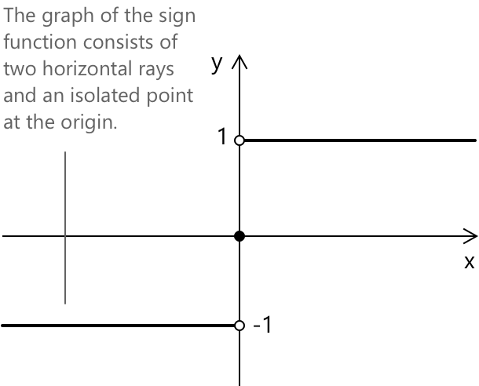
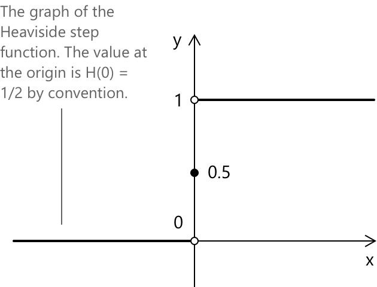

Функція знака
Вступ
Функція знака присвоює кожному дійсному числу його знак, не враховуючи його величину. Функція визначається наступним чином:
\[ \operatorname{sgn}(x) = \begin{cases} -1 & \text{if } x < 0 \\[6pt] 0 & \text{if } x = 0 \\[6pt] 1 & \text{if } x > 0 \end{cases} \quad \forall \, x \in \mathbb{R} \]
Зокрема, \(\operatorname{sgn}(x)\) повертає \(-1\) для від'ємних значень, \(0\) коли \(x = 0\), та \(1\) для додатних значень. Функція не визначає величину \(x\), а лише вказує на положення \(x\) відносно нуля. Наприклад, застосовуючи означення, маємо:
\[ \operatorname{sgn}(-7) = -1 \qquad \operatorname{sgn}(0) = 0 \qquad \operatorname{sgn}(4) = 1 \]
Графік \(y = \operatorname{sgn}(x)\) складається з двох горизонтальних променів та однієї ізольованої точки. Промінь на \(y = -1\) простягається на всі \(x < 0\), промінь на \(y = 1\) простягається на всі \(x > 0\), а ізольована точка в початку координат \((0, 0)\) лежить на \(y = 0\). Обидва промені наближаються до осі y, але не перетинають її.

Функція знака класифікується як непарна функція, оскільки вона задовольняє тотожність:
\[ \operatorname{sgn}(-x) = -\operatorname{sgn}(x) \quad \forall \, x \in \mathbb{R} \]
Властивості
- Область визначення: \(\mathbb{R}\).
- Область значень: \({-1,\, 0,\, 1}\).
- Функція є непарною, оскільки \(\operatorname{sgn}(-x) = -\operatorname{sgn}(x)\).
- Функція має рівно один корінь при \(x = 0\), оскільки \(\operatorname{sgn}(x) = 0\) лише коли \(x = 0\).
- Функція є сталою на \((-\infty, 0)\) та на \((0, +\infty)\), отже зростаючою в тому сенсі, що вона є неспадною на \(\mathbb{R}\).
- Функція має розрив першого роду при \(x = 0\); вона є неперервною в усіх інших точках.
- Функція не є диференційовною при \(x = 0\). Вона є диференційовною з нульовою похідною в усіх інших точках.
- Границі при наближенні до \(x = 0\) з кожного боку: \[ \begin{align} \lim_{x \to 0^-} \operatorname{sgn}(x) &= -1 \\[0.5em] \lim_{x \to 0^+} \operatorname{sgn}(x) &= 1 \end{align} \]
Оскільки дві однобічні границі відрізняються, двобічна границя не існує: \[\lim_{x \to 0} \operatorname{sgn}(x)\]
Границі на нескінченності
Коли \(x\) віддаляється від початку координат у будь-якому напрямку, функція знака стабілізується на сталому значенні:
\[ \begin{align} \lim_{x \to -\infty} \operatorname{sgn}(x) &= -1 \\[6pt] \lim_{x \to +\infty} \operatorname{sgn}(x) &= 1 \end{align} \]
Це є простим наслідком того факту, що \(\operatorname{sgn}(x) = -1\) для всіх \(x < 0\) та \(\operatorname{sgn}(x) = 1\) для всіх \(x > 0\), тому значення функції не змінюється при віддаленні \(x\) від нуля.
Похідна та інтеграл
На кожній з двох відкритих півпрямих, де функція знака є сталою, її похідна дорівнює нулю:
\[ \frac{d}{dx} \operatorname{sgn}(x) = 0 \quad \text{for } x \neq 0 \]
При \(x = 0\) похідна не існує, оскільки функція є розривною в цій точці. Однак у сенсі розподілів похідна функції знака дорівнює:
\[ \frac{d}{dx} \operatorname{sgn}(x) = 2\delta(x) \]
\(\delta(x)\) — це дельта Дірака, узагальнена функція, яка дорівнює нулю скрізь, крім початку координат, і інтегрується до одиниці на всій числовій прямій. Ця дистрибутивна тотожність демонструє, що функція знака має розрив амплітудою \(2\) у початку координат, оскільки:
\[ \lim_{x \to 0^-} \operatorname{sgn}(x) = -1 \] \[ \lim_{x \to 0^+} \operatorname{sgn}(x) = 1 \]
Ця амплітуда пояснює наявність множника \(2\) перед дельта-функцією Дірака.
Невизначений інтеграл функції знака, обчислений поза початком координат, дає абсолютне значення:
\[ \int \operatorname{sgn}(x) \, dx = |x| + c \]
Це узгоджується з тим фактом, що похідна \(|x|\) дорівнює \(\operatorname{sgn}(x)\) скрізь, де перша є диференційовною.
Зв'язок з функцією абсолютного значення
Між функцією знака та абсолютним значенням існує прямий алгебраїчний зв'язок. Для будь-якого \(x \neq 0\) виконується наступна тотожність:
\[ \operatorname{sgn}(x) = \frac{x}{|x|} \]
Цей результат узгоджується з означенням: коли \(x > 0\), відношення \(x / |x| = x/x = 1\). Коли \(x < 0\), відношення \(x / |x| = x/(-x) = -1\). Формула не визначена при \(x = 0\), тому значення \(\operatorname{sgn}(0) = 0\) призначається окремо за домовленістю.
Навпаки, абсолютне значення можна виразити через функцію знака за допомогою наступної тотожності:
\[ |x| = x \cdot \operatorname{sgn}(x) \]
Ця тотожність виконується для всіх \(x \in \mathbb{R}\), включаючи \(x = 0\), де обидві сторони дорівнюють нулю. Разом ці дві тотожності демонструють, що \(|x|\) та \(\operatorname{sgn}(x)\) є взаємодоповнюючими: абсолютне значення зберігає величину й відкидає знак, тоді як функція знака зберігає знак й відкидає величину.
Дві додаткові тотожності випливають зі зв'язку між функцією знака та абсолютним значенням. Перша тотожність має такий вигляд:
\[ x = |x| \cdot \operatorname{sgn}(x) \]
Ця тотожність виражає будь-яке дійсне число як добуток його величини та його знака. Друга тотожність використовує рівність \(|x| = \sqrt{x^2}\), яка є дійсною для всіх \(x \in \mathbb{R}\), та дає альтернативне представлення функції знака для \(x \neq 0\):
\[ \operatorname{sgn}(x) = \frac{x}{\sqrt{x^2}} \]
Зв'язок з функцією Хевісайда
Функція Хевісайда \(H(x)\) визначається як:
\[ H(x) = \begin{cases} 0 & \text{if } x < 0 \\[6pt] \dfrac{1}{2} & \text{if } x = 0 \\[8pt] 1 & \text{if } x > 0 \end{cases} \]

Функція знака та функція Хевісайда пов'язані простим лінійним перетворенням. Зокрема:
\[ \operatorname{sgn}(x) = 2H(x) – 1 \]
Еквівалентно, маємо:
\[ H(x) = \frac{1 + \operatorname{sgn}(x)}{2} \]
Цей зв'язок часто використовується, оскільки перехід між цими представленнями може спростити обчислення. Функція Хевісайда відображає \((-\infty, 0)\) у \(0\) та \((0, +\infty)\) у \(1\), і тому може бути інтерпретована як зсунута та перемасштабована форма функції знака.